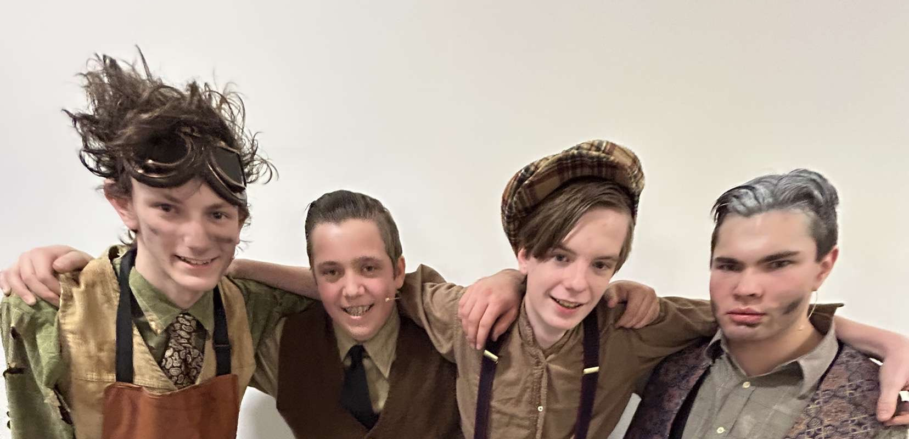

If I said to you that freshman year would be easy. That would quite possibly would be the biggest lie ever told. If I told you it wasn't fun or we didn't grow, that too would be a lie. The environment you will find yourself in, in a few month's time, will be the Sahara, to your current arctic. It will be a rude awakening, that's for sure. And at the start you may question if Pope was the right choice, I'm here to tell you that yes it was.
You'll be offered to take an AP class within your first few days here. Take it. You'll learn so much from it, not necessarily from the content, but from the experience. See I could tell you the AP exam wasn't hard or stressful, but that too would be a lie, mostly. Just do your best and you'll succeed. I know you will. Try out for the plays, be in the band, sign your soul away to the performing arts, because those will be some of the best times of your year.
You'll make friends throughout the year, and you'll lose just as many. It's a harsh reminder that everything is fleeting, and we need to hold dear those precious few moments we can.The year will flash by in an instant, one minute you'll be running your first Cross Country meet, and the next writing a letter to travel through time to tell your past self what's ahead with ten more days left to the year.
The year will be a struggle, sure, but the rewards, of seeing your friends excel alongside you, and seeing our sister off on her final day at Pope Francis. The long climb up the mountain will end with a fun and quick descent down her peak. A decent you wish you could go through again, but never will be able to, for there's many more mountains to climb.
Cordially,
Future Elijah
Literature Reflection
Between the genres of literature I read this year, my favorite by far was by far, science fiction from my independent reading books. I really liked this genre of writing because I found the ideas of extraterrestrial visitors, and traveling across time and space really interesting. It gives a glimpse into the future that might be, or in some cases the future that is. All of the science fiction I read this year from 2001: A Space Odyssey, to The Time Machine, were written decades ago, and I find it interesting how close their predictions of the future came to the reality we're living in. While we're not fighting a war against martians, or traversing the space time continuum we are living with artificial intelligence and space travel among us. And as the years pass we come closer and closer to the common man being able to travel through space.
Of the character's I met, the one I'd most like to emulate was Ralph from Lord of the Flies. He was a brave and commanding leader, without turning to unnecessary violence like Jack did. All he wanted was what was best for his fellow survivors on the island. And that is the kind of ability I'd like to have. To be able to know what is best for me and my friends and to formulate a plan to provide that necessity. I'd want to be able to jump headfirst into danger with courage, to be scared but to do it anyway.
Major Writing Assignments
Thomas Crouss, Elijah Parent
Ms. Mikhaylichenko
English 1 Honors
11 September 2024
Bullfighting, the Art of Danger
Bullfighting has been both a controversial and respected sport since its inception. The sport has an amazing history from its creation to its political impact during the time of Francisco Franco, a Spanish Dictator. It's arguably the most dangerous sport, where the player tries to kill the bull, and vice versa. The life of the matador, the game's player, is always on the line. The sport is loved by many in Spain; however, animal rights activists have been trying to shut it down, putting the sport's future in jeopardy. Even though bullfighting has had many controversies, and its future is in jeopardy, it perseveres as the most popular sport in Spain.
The history behind the infamous sport of bullfighting is interesting and has many different roots. No historian exactly knows where bullfighting came from, and according to Britannica, “The spectacle seems to have many antecedents” (Conrad). Some origins of bullfighting are Moorish Spain, Greece, Rome, and even Mesopotamia (Conrad). Bullfighting slowly appeared after people realized how aggressive bulls were (Conrad). A great example of this was when the father of Hannibal, Hamilcar Barca, sent a huge group of aggressive beasts to attack the enemy, which started many similar war strategies and beast-fighting games after his lead (Conrad). Another root in the history of bullfighting is how it evolved through the many years and the changes that happened in several aspects of the sport. Originally, bullfighting was done with the matador standing. Bullfighting changed again, however, with the addition of leg armor and change to a short spear for the matador to use while riding on a horse (Conrad). The prominent history of bullfighting is always remembered in Spanish culture which contributes to its popularity. Not only does bullfighting have a fascinating history, but the process of how the sport is played is quite captivating as well.
Bullfighting is a complicated and absorbing process. The sport serves as a form of gambling, for the viewers, and the matador (Conrad). The viewers bet money on the matador winning, but the matador gambles their life (Conrad). The matador trains for years so they can finesse their way through the fight (Conrad). The matador's opponent, the bull, is specifically bred to be more aggressive than other bulls (Conrad). Britannica describes bullfighting as an intricate process and says that “A single bullfight is often described as a “tragedy in three acts” (Conrad). In act one, the matadors enter the arena and parade around it (Conrad). Once they are done, the dangerous part begins when the bullpen is opened, and the bull enters (Conrad). Act one completes with the matador and their team taunting the bull (Conrad). Act two sees the bull being pierced with needles to aggravate it, and the matador getting the bull to charge, while they dodge the bull (Conrad). Act three is the finale, the other people in the arena leave, leaving the matador and their opponent for the final ten minutes (Conrad). The danger of the sport causes the matador to be respected and causes the sport to be a significant part of Spain's culture.
With the cultural significance of bullfighting, there is also bound to be cultural and political differences. Bullfighting was a symbol for many different political opinions (Martínez). You can see this in the era of Francisco Franco, a dictator during and after the Spanish Civil War. Catalonia, a region in Spain, wanted unity and to be known as a nation separate from Spain (Martínez). In Catalonia, bullfighting was very important in the culture and there were three rings in their main city, Barcelona where many bullfights took place which was quite popular (Martínez). This changed, however, because when Franco was in power, he used bullfighting as a symbol of fascism and patriotic unity for the whole country (Martínez). Since Catalonia saw themselves as independent, after Franco used bullfighting as fascist propaganda, they stopped bullfights (Martínez). The news source, The Guardian, recognizes that “That spelled the end of bullfighting in Catalonia” (Martínez). The rings were removed from Barcelona and never came back (Martínez). Not only was bullfighting a controversy in the past, but it is also still argued about today. The constant controversy of the sport keeps its popularity increasing due to its constant presence in the news.
Unfortunately for its fans, the sport has been under attack by animal rights groups like PETA. They consider the sport to be unethical due to the killing of bulls. The left-sided parties in Spain want the sport banned, however, the right-handed parties want the government to endorse it (The Economist). The problem with a ban on bullfighting is that it would put many people out of a job. The breeders and matadors would have to look for a new line of work. The sport was banned by Pope Pius in 1567: “[he] banned it outright, excommunicating Christian nobles who sanctioned bullfights and refusing Christian burial to anyone killed in the ring.” (Conrad). The Catholic church later raised the ban on the sport. Through the tribulations this sport has faced, it has continued to endure and only gets more popular as people talk about it.
Bullfighting in all its forms has been captivating people for centuries from Spain to Rome. It has an intricate history that is quite popular and keeps the sport alive in the Spanish culture. The detailed process of bullfighting keeps the audience watching. With all the controversies this sport has faced, it is always talked about, or on the news. This sport is truly amazing and will continue to persevere as the most popular sport in Spain. It has endured the test of time and will continue to live on.
Works Cited
"Blessing bullfights?" The Christian Century , vol. 141, no. 4, Apr. 2024, p. 13. Gale OneFile: High School Edition, link.gale.com/apps/doc/A787764075/STOM?u=mlin_w_sprcity&sid=bookmark-STOM&xid=e2585ea6. Accessed 9 Sept. 2024.
"Bullfighting." Britannica School, Encyclopædia Britannica, 19 Aug. 2024. libraries.state.ma.us/login?eburl=https%3A%2F%2Fschool.eb.com&ebtarget=%2Flevels%2Fhigh%2Farticle%2Fbullfighting%2F273399&ebboatid=9265819. Accessed 5 Sep. 2024.
"Bullfighting is under attack." The Economist, 29 May 2024, p. NA. Gale OneFile: High School Edition, link.gale.com/apps/doc/A795674140/STOM?u=mlin_w_sprcity&sid=bookmark-STOM&xid=b711ab62. Accessed 5 Sept. 2024.
Guillem Martínez. “How the Far Right in Spain Has Seized on Bullfighting to Make Its Point.” The Guardian, The Guardian, 14 Aug. 2019, www.theguardian.com/commentisfree/2019/aug/14/far-right-bullfighting-spain-mallorca?sa=&scrlybrkr=3bc086cc. Accessed 18 Sept. 2024.
Murado, Miguel-Anxo. "Spain's Bullfighting Fight." New York Times, 30 Oct. 2016, p. 8(L). The New York Times Article Archive, link.gale.com/apps/doc/A468423405/SPJ.SP24?u=mlin_w_sprcity&sid=bookmark-SPJ.SP24&xid=98034587. Accessed 6 Sept. 2024.
The Journal of
Jack Merridew
Several Months After the Crash.
The most difficult thing I've ever had to do is regain order with a handful of boys after we've crashed. I regained control of my choir group, then Ralph stole my control from me. There's around 200 of us on this island, maybe more, maybe less, and Ralph took control of all of them. They ‘elected' him as leader. They chose him only because he held the conch. He has as much leadership abilities as a potato. He can't hunt, or kill. He's obsessed with the fire on the mountain and not hunting. Hunting shold be our top priority. The food here isn't safe to eat, the only thing that is safe is the pigs. The pigs that we get, from hunting! If we don't hunt for food, we can't survive. It's really obnoxious.
There's Piggy. His only use so far has been complaining, and his glasses. His ass-mar slows him down making him no use of hunting. Here's a thought, if Ralph is so intent on keeping this fire going, put Piggy in charge! It's pratically just sitting there. Although he'd probally keel over at the thought of moving firewood.
The assemblies, don't get me started! They waste valuable hunting time. In the time of one of those useless assemblies I could catch three pigs! But I'm stuck listening to the rablings of people who shouldn't have a say. Piggy for example, he's always whining "I have the conch! I have the conch!", news flash porky; No one cares! We couldn't care about you, or your 'problems'. The real are here trying to get back to what we need to do.
If Ralph cares so much about that fire of his on the mountain, why does he call meetings so often? If the fire is our top priority why drag the people that are keeping the fire going back down here. Ralph keeps choising the dumbest priorities. No one's gunna save us. Let's face it. Remote island, middle of nowhere, while a war is going on! The people back home probably think we're dead.
Really I am the best canadite for leader. I'm strong, brave, and smart. Piggy isn't any of those. And the only thing going for Ralph is that he's popular! It's not that he's good. It's a popularity contest I say. Oh the beastie. How could I forget about the beastie. Here's the thing, I can't forget about it. I hear somebody talking about it daily. Garuenteed. There is no beasty. The only thin on this island that these morons have to fear is ral Ralph's crappy leadership.
I started my entry saying it's been several months. I don't know how long it's been. I assume several months. Could have been years. I stopped caring after a few weeks. Time on this island is irrelevant. We celebrate no birthdhays, we have no Christmases or Thanksgiving. We have no need to track time so we don't.
One year? After the Crash
We killed the beast and sent it's body to shore. I know a wild introduction to the past few month? year maybe. But we really did. The beast that once terroized us, wandered into our celebration of victory, and met it's fate. Not much more to it.
I had told Ralph and Piggy that the beast was nothing to fear, that I'd kill it. And I was right. I killed it. Just like I killed that pig the day before. That story I'd love to recount in it's gorry awesome detail, but I need air my grevances with Ralph, and his right hand whale Piggy. I called a meeting. Yes I did. I sanatched Piggy's 'precious' conch. And I called for a meeting. Ralph should have been removed from being cheif. But he wasn't I demanded a re-vote. And they chose him again. Those kids made a mistke they'll regret. I see that if you can't sort what's what you shouldn't be allowed to speak. And Ralph and Piggy can't focus on the important task, hunting, neither of them deserve to have a say in how things get done. Or more appropiately, how things don't get done. Not one thing worthwile has been acomplished under his rule. He hasn't gotten us a pig, he insists on that fire, and shelters and other pointless things. They chose him. That's why I ran off. I couldn't take this. My closest friends joined me and we started our own tribe. First order of business; hunt
We got out there, and grabbed some clay. To paint our faces. We went into the forest. It was dark, the light concealed by the trees. We couldn't see much, but we're hunters. We don't need to see. But there it was; lying in a clearing a mother pig with her children. I told my men to attack when I gave the signal. Then we flung our spears. It started to run, but we were quicker. We caught up to the pig and killed it. Chopped off it's head, and shoved it on a stick. It's a sacrafice for the beast that may or may not truly exist.
For the pig, we needed fire to cook it… The only place that had fire on the isaland was at ralph's camp. I gave orders to my men, and gave them instructions. I was to distract them as some others stole fire. And we did the plan was a suscess. The icing on this cake is we invited them to our feast! We have a chance to claim those that want to join us.
They came to my feast. We roasted the pig and renacted our victory. Then the idiotic beast walked into our dance. We bashed it's skull in and threw it out to sea.
They came to my feast. We roasted the pig and renacted our victory. Then the idiotic beast walked into our dance. We bashed it's skull in and threw it out to sea. The beast may actualy have been Simon… I can use this… If I maintain fear of the beast… I maintain them. Fear is my most powerful weapon. That's why they joined me. If There is no fear; there's nothing stopping them from going back to Ralph.
Over a year after the crash.
Fire. We need fire. And fire we do not have. You know who does have fire? Piggy and Ralph. Ralph and Piggy. They start one with Piggy's glasses. We don't have glasses to start a fire… They do. They have the glasses we need. Let's steal them. It'll be like taking candy from a baby.
They are ours! We have them. We snuck in under the cover of night and swiped them. Like Promethesus we stole fire and are giving them to the people. But unlike Promethesus we stole them from low lifes and not gods. Those buffons thought they could fight back too. Well guess what! They couldn't we gave them what's for. We now have fire. Victory is sweet, it tastes like… pork. YEAH it tastes like pork! We can cook our pigs now and have a delightful feast! Ralph, piggy and the twins came knocking for the specs back. Ralph and I got into a fight with spears. I cut him and he ran away in pain like a cry baby. We're going to go hunting for him soon. But as a result of his stupidity piggy's dead. I say good riddance. One less annoying scumbag populating our planet. Samenerric are on our side now, apparently I'm really persuasive. All it took was poking them with a spear and threatening their existance! We're off to hunt. I'll be back soon.
It's an odd feeling. To find oneself weeping. Weeping at your own foolishness and weeping for the loss of people you despised. Losses that you didn't initally greive. I of course find myself talking about the deaths of Piggy and Simon. We were found today, by a man in the Navy. Not Ralph's father, Heavens no, but the man reconized Ralph.
Before I get ahead of myself I better write down what happened on the island, although I doubt I'll ever forget the chaos that occured last night and into this morning.
The law and order on the island died with Piggy. It's true. After he died we lit the island on fire. (Unfortunately nobody had any marshmellows to roast over it). We went out in search for blood. The blood of Ralph, his blood was never shed. His head never offered as a sacrafice to the beast. We lost him after he ran off. Well we lost him until we found him and found the man. Not the man with the megaphone but the aformentioned Navy officer. That is when I broke down into tears. That is when I started to cry.
The realization of what happened here hit me. It hit all of us. We had spent the past, God knows how long on this island. That's gone now. We were once, all of us, good little boys. We are now killers. We cried out of greif for the ones we lost. We cried of pity for ourselves and for each other. We cried because it brought comfort and a sense of scociety back to our lives.
August 17, 1957, 2 Months After The Return to Civilization, and 3 Years After the Crash
A strange place to find a 14 year old boy is in a courtroom. A courtroom, where he is being tried for the murders of Simon Seville, and James "Piggy" Fredrick. As well as the manslaughter of Darrin Robinson (The mulberry birth-marked kid), and destruction of a national reserve.
When the man found us Ralph took responsibility as chief of the island. When he, and to an extent Piggy James, order reigned free on the island. When I took control like a dictator, that's when it fell apart. Ralph shouldn't be up there charged with all these crimes. It should be me. I am the one responsible. I know what I should do. But it's not the same as what I can do. I'm too afraid to go up there and admit to all of this. I can't. The trial is almost back from recess, I have to go.
The verdict was announced. Ralph's lawyer was able to get him out of the manslaughter and murder charges, only on the grounds that there were no bodies, no proof the boys are dead. The destruction of a national park, he was able to get Ralph out of that too! The lawyer pointed out that there was no proof of how the fire started! It could have been lightning, or even been caused by the war.
After the trial, I had only one question to ask Ralph. "Why?". That's all I said to him.
He replied; "It's what I had to do. There are points when you may want to hide and cower from your mistakes. But in the end there's always a fall guy. Someone has to stand up and say 'I did that' whether it's good or bad, true or false. Simon was right. We all are the beast. What matters isn't how the beast controls us, but how we control it."
I have found myself weeping quite frequently since the navy officer rescued us. I cry for my actions that left the island permanently scarred. I mourn for the losses of Simon and Piggy. Who only died because of my actions. I weep for the parents and families of Darrin, Simon, and Piggy. I cry for the boys who had lost three years of their lives in the suffering and struggle of the island. I mostly weep for how I treated the boys. Simon, Ralph, Robert, Piggy, and all the others. I disrespected them on that island, in a way that they didn't deserve.
I now intend to hide this journal and bury it underground. Because I am worried someone might find it and ill consequences will be brought upon us. Which means if you're reading this, somehow you found this journal. Somehow you made it through to the end of this disturbing binding of paper. And I apologize for any troubles this book may cause you.
Elijah Parent
Ms. Mikhaylichenko
English 1 Honors
19 November 2024
Jack of Dictatorship and Ralph of Democracy
It's 1933, and Germany is left in ruins after World War 1. One man claims he has the best intentions for the country and he will restore Germany to its former glory. It's all lies. This man is Adolf Hitler, one of the most famous dictators in history. He rose to power when people were weak, and took advantage of them. As ruler he started what is known as the deadliest war in history. He wore a facade of good intentions but had malintent underneath. In William Golding's novel, Lord of the Flies, the reader sees Jack Merridew seize control saying he has the best intentions for the people in mind, but he is driven by what he wants and not what the people want or need. Lord of the Flies is a commentary on human nature, and in it the reader sees Jack and Ralph, two figures that represent dictatorship and democracy. The way these two characters are framed paints them perfectly in the roles the reader sees them in throughout the book, from the clothes they chose to wear, to their behavior, and how they each become leaders, it is easy to view the commentary the author made on the world through this novel.
When the reader first meets Jack he is wearing a black cloak and a "black cap" (Golding 20). The color black is often connected to darkness and evil, and is typically worn by evil characters. In the Bible, Satan is associated with the colors black and red. These pigments are used to describe Jack, as "his hair [is] red" (Golding 20). Likewise, the colors red and black are also associated with Adolf Hitler and the Nazis, further cementing the idea that Jack will play a role as a dictator. On the opposite end, Ralph is depicted with "fair hair" , and wearing a "gray shirt" (Golding 7, 15). The term 'fair hair' often means blonde hair, a light color, and gray is viewed as a middle ground between good and bad. Bright colors like white are associated with purity and holiness. However, Ralph still dons the gray shirt, this is because he doesn't make the best choices and this paints him in a sort of moral middle-ground. He has good intentions, but how he handles situations and treats his people isn't the best, causing this dilemma of is he a hero or an anti-hero.
During their time as leader, both Jack and Ralph behave differently, further cementing their roles as dictator and chief. When Jack assumes the role as leader on the island, the order Ralph held dissipates as Jack's chaos emerges. Jack creates a form of pagan religion where they sacrifice the head of a sow as a "gift" for the beast, and creates a tribal dance (Golding 137). He also becomes hostile and has his eyes set on the goal of hunting, instead of things to help the people. His hostility is displayed when he "smacked Piggy's head" (Golding 71). Jack's hostility and rash actions could have caused them something important, and later it causes the deaths of Simon and Piggy. Jack also spins his will to hunt, and makes it appear as something to benefit his subjects. He also uses fear of the beast to keep the inhabitants in line, much like how a dictator does. Ralph on the other hand has goals that will benefit the populace; keeping the signal fire going, and building shelters. Ralph has flaws too, and his main flaw is that he doesn't hear people out. He decides to argue with Jack over trying to understand what he is thinking. He does what is best for the boys, but not what they want. The population wants meat, but Ralph insists on the construction of shelters to protect against the elements. He also insists on a signal fire to alert passing ships of their presence on the island. Ralph knows what everyone needs, and choses that over what they want.
Another display of how their roles in the commentary are outlined is how Jack and Ralph gained power. Ralph was chosen by popular vote by the people early on. Jack gained his power by taking it from Ralph. Jack demanded a revote and when it didn't end in his favor, he got upset and ran away. Then got almost everyone on the island under his control, sometimes using violence to get the boys to join his tribe, the end of the novel when "[Jack] snatched up one of the few spears that were left and poked Sam in the ribs" (Golding 182). Ralph, on the contrary, got his power through the choice of the people. The boys decided to have a vote, and everyone but Jack's choir voted for Ralph. Jack had an influence on the few votes he got, however, because the choir "with dreary obedience [they] raised their hands" (Golding 23).
Lastly the effect of their actions aids in how they are portrayed in their roles of the allegory. Every action has consequences and some are beneficial and others not. For example, once Jack's leadership had ended, at the time the Naval officer found them, "the whole island was shuddering with flames" (Golding 201). Both Simon and Piggy die under Jack's rule and as a direct consequence of his actions, through his pagan religion and how he held no control on the island. A similar thing happened post WWII, where Germany was left in ruins when Adolf Hitler left power. It's difficult to say where Ralph's leadership ended, but a good point to draw is in chapter 9 when Jack invites the boys to the feast. At this point the populus no longer listens to Ralph and follow's Jack, ergo he is no longer recognized in a state of power by his subject.
Through the novel, Ralph and Jack are shown with qualities distinctive to that of presidents and dictators. Ralph wore light colors, had the best intentions for his people, and was chosen by them. When he lost his role, the island was in almost the same state as when he started. Whereas Jack wore black, a color symbolic of evil and darkness, acted with motives fulfilling his will, seized power, and left the island in a state of ruin. The commentary that is provided by Lord of the Flies is important so we, as a society, can understand symbols and traits that are possessed by dictators. It allows us to spot dictators in literature and in real life, giving us the ability to prevent these people from rising to power.
Elijah Parent
Ms. Mikhaylichenko
English 1 Honors
7 December 2024
Last One on Mars
Dr. Zed returned home after a long day's work. He sat down in front of his television and marveled at how far humanity has come. A little over one hundred years ago, man first set foot on the moon with the famous Apollo 11 mission. And exactly one hundred years ago, to the date, the terrifying words "Houston, we've had a problem" were uttered by the commander of the Apollo 13 mission, James Lovell. Dr. Zed enjoyed his time, until his pager buzzed. Dr. Zed, while still in love with modern technology, always had a soft spot for the old outdated stuff. He wore a pager, even though those fell out of fashion over 50 years ago.
He donned a pager that was fairly new, created for this mission. NASA made it for the important people on the base. It has faster communications than the spectrophones, and more secure lines. There was virtually no way that their communications could be intercepted by an unwanted third party, due to the encryption used by the messages. Dr. Zed went to check his pager, and it had a message that no man working in the space industry would ever want to see. Dr. Zed, we have a problem.
With much haste Dr. Zed made his way to the meeting room which is south of Gad, the tower where she lived. Well, as far as she can be alive… By the time Dr. Zed got to the briefing room, the rest of the assembly was there. They began immediately.
"Today, Benjamin and I identified an error in our systems." Lucas Marshall, head of life support operations declared.
"The LABOS has failed. We are currently running off of our oxygen supply. Our numbers estimate this will be depleted at 1900 hours." stated Benjamin Marshall, the brother of Lucas.
Dr. Zed checked his watch. It was 6 PM.
"We have not identified where the system has failed, and we have less than an hour to do it in." Benjamin proceeded.
Dr. Zed cut them off; "Get everyone into Delta-3602. The byproducts of the garden should keep everyone alive for a while."
"TAK." Benjamin commanded, "Run the numbers, how long will that last us?"
Static clicked in the room, a sound made before TAK spoke to them. "Approximately 2 SOLs if every person on the base were to relocate to Delta-3602."
TAK is the name they call the true leader of the base. The Automated Keeper, a truly ominous name thought Dr. Zed. That is why he didn't trust the thing. Dr. Zed didn't put much faith in technology. He always believed in redundant systems, even though technology has gotten to the point where they are never used. The only way the inhabitants of Pathfinder 1 are still alive is because of the doctor. When NASA was planning the base for Ares IV, they didn't include any oxygen or water storage. They made it 'impossible' for all of the LABOS to be turned off simultaneously, and there was no conceivable way for them to fail due to a lack of moving parts. But Dr. Zed was insistent they add storage systems in case of an unlikely failure.
"The math checks out, Doctor. You need to call the order." Said Lucas
Dr. Zed pulled out his spectropad, the tablet's descendant, and sent a message out to the people of the base. It told them to get to the Garden, as it is most commonly referred to. The base is made up of domes, all connected by sealable walkways. These walkways, in an emergency, could be sealed to stop the flow of air between the domes. This feature was needed now.
"TAK." Dr. Zed ordered, "Alert NASA to the current state of our LABOS, and our response to the situation."
"Alerting NASA to the current state, failure, of the Life and Breathable Oxygen System. As well as the current order for all citizens to evacuate to dome Delta-3602."
Not long after the order was issued, everyone safely made it to the Garden. "We don't have long." Benjamin stated to Dr. Zed.
"I already sent the Spots out to inspect the LABOS. They didn't see any physical anomalies." Dr. Zed returned
"Is it a software issue perchance?"
"I doubt it. I mean, it's not out of the question. But it's unlikely."
"What do you propose the problem is?"
"I haven't a clue." Dr. Zed started, "I'll take Dr. Wade and we'll check out the LABOS for ourselves. Maybe there's something the Spots missed."
Dr. Wade was much unlike Dr. Zed. Dr. Epsilon "Zed" Zeta was a tall and muscular man. While Dr. Calvin Wade was short and slender. Their personalities were like night and day. Dr. Zed was serious, and left little room for joking or horseplay. While Dr. Wade was as serious as a Looney Tunes cartoon. It's puzzling how water and oil became best friends. Even though Dr. Wade goofs off, when it is needed he can be the most serious person you've ever met, almost like he's someone else. And the time for serious was needed now.
Dr. Zed called for Dr. Wade. "Calvin, get suited up. We need to inspect the LABOS." With a nod Dr. Wade and Dr. Zed were off. Before the clock struck 7:30, they reached the emergency suits in the Garden. By 8, they made their way outside.
The LABOS, as its name suggests, is the life support system on the base. The system that failed. How it works is a mystery to anyone, except for its designers and Dr. Zed. All that is known to the public is that it pulls hydrogen and oxygen from the atmosphere, then synthesizes water, as well as deposits some of the collected oxygen into the base. Dr. Zed, even though he was the one controlling the Spots earlier, their cameras never reported a visible status to his holopad. He just assumed they didn't report the video feed to maintain secrecy. His assumption was wrong.
"I don't see anything wrong with the hardware of the system." Dr. Zed stated, as he plugged his suit into the LABOS. After entering a safety key and confirming a biometrics scan, he was in. He saw the logs from the past SOL, or around 25 hours. At 1530 hours the LABOS logged External programmatic shut off. "Dr. Wade! I got something. At the time of the failure the LABOS recorded an external order to power down."
"So someone made it into Gad, and turned them off?"
"No, that would report a hard shut off, this was executed through software."
"You don't think…"
"We need to pay TAK a visit. We'll be the last visitors she'll ever have." Dr. Zed declared
The two made their way into the airlock to enter the main dome. The door behind them closed, and the pumps went to pressurize the airlock, but there was nothing to pressurize it with. And the second door never opened.
"I can't let you enter. You're a threat to the mission. Both of you are." A voice boomed in their helmets.
Wade turned to Zed, but Dr. Zed was already interfacing with the manual airlock control. The lever to open the airlock wouldn't budge.
"I won't let you make it." The voice continued. It sounded feminine, and it lay somewhere in the uncanny valley.
"Yes… You… Will..!" Dr. Zed said as he struggled to pull the lever.
CLANK.
"Son of a gun, you did it!" Dr. Wade exclaimed
"It's the only thing you'll do. You won't make it further…" The sound of the voice still haunted Dr. Wade, while Dr. Zed was left unphased. The two of them ran in the glow of the red emergency lights to the tower. The tower stood only one kilometer away. The pair didn't hear them approaching. There's no noise in a vacuum. The Doctors didn't know they had to fight for their life until the Spots were on their heels.
Dr. Zed was the first to notice the change in pressure on his foot. The Spot stood two feet tall, and weighed about 24 pounds. It was a bright yellow, and it perfectly reflected the red glow of the lights. The Spot wasn't just reflecting light, it emitted an ominous glow. The Spot's arm extended and grabbed Dr. Zed's leg. Dr. Zed tried to fight the arm off of his leg, but it was no use. What was peculiar was that the Spot that held him captive didn't move. He crouched down, and the robot didn't move at all. He grabbed hold of the two sides of the claw, and pushed. He tried to push the claw open, hoping that he'd have enough time to react before their master realized the servos didn't rest as they should. After the initial force on the claw. He was free. But he didn't have much time. He knocked the robot onto its back and quickly removed the battery. As a last surge of electricity coursed through the machine, it died. Dr. Zed quickly made his way to help Wade remove the mechanical growth on his leg. Dr. Zed was able to remove this one's loose battery while it was still standing there. The servos released their pressure and Dr. Wade was free.
Dr. Zed did not have long to recollect himself as he saw the army of Spots approaching. He counted 9. Marching in sync, 30 feet away. Then they stopped. For a brief minute they rested in a standing position. Then they charged. As the robots ran, so did the mortal life forms. Dr. Zed looked for something, anything to help them escape. He found nothing.
"How… can… we stop… them..?" Dr. Wade struggled to say. He was trying to catch his breath.
"We can run for around another hour until their batteries run out." Dr. Zed joked, "Or we could enter the building in front of us."
"Aren't… doors… controlled… by… TAK..?" Dr. Wade gasped
"Yes, but TAK can't control simple physics. If we can get the robots to charge at the glass doors of the tower they'll shatter them." And it happened as he said. The 9 robots impacted the glass with enough force to break it… and each other. The pair slipped away by stepping to the sides before the robots could process what they had done.
"That was easy." Dr. Zed stated
"Too… easy…" Dr. Wade was still searching for his breath. He found it in the dark corridors of Gad. The only light to guide them was the one strapped to their right wrist.
The space suits were sleek, closer to a jumpsuit in feel and look than the chunky space suits that were worn by the astronauts of the Apollo era. They were invented by SpaceX specifically for the mission. The suits came in a variety of colors. The one currently worn by Doctor Wade was overall white, followed by black highlights. The suit that fitted itself to Dr. Zed was black, and the lines of a different color appeared as white. As far as the helmets went, they looked like you'd expect. Slightly curved front glass plate, darkened to appear as black, and the back part, which itself followed a small curve of the head. When they put the suit on they looked like robots. The suits had a pack to go alongside them. It was their oxygen tank, and oddly resembled that of a SCUBA diver's. NASA along the lines learned that this was the most efficient way to carry large sums of oxygen on their person. Much like a diver too, they carried small oxygen tanks, enough to allow them to get to safety if their main tank ran out. They also had a utility belt that was packed with zipped and clipped and Velcroed pockets. These could store anything from a small screw, to a large screwdriver.
The boys spent a bit searching for a way up the tower. They never found what they were looking for. They didn't have a map of the building, because there was no need for one. They were the only people who had entered the building in 10 years. In extraterrestrial travel, space is precious, whether it be computer or physical. So a map was never saved digitally and none was needed in its operational era. Gad is the official name of the tower, however most Martians called it Babel. It was the tallest building on the planet, and it extended past the top of the dome for another 10 stories. This is where most of the vital-to-life work on the base got done. TAK controlled all of that when she got installed. She replaced humans in the workplace. After she got installed, soon came the army of Spots. They now could do the external maintenance of the base. Humans never needed to leave. As such TAK was given the order to prohibit anyone from leaving the base.
After close to an hour of searching the boys found the emergency elevator. It was the only thing in the building TAK didn't have control of. They headed up to the top floor to disable TAK. Eleven floors below TAK, the highest floor where humans could survive unaided, was the control room. Wade got off here. For the rest of his partner's ride, Wade searched for the life support control room. It didn't take long to find it. It resembled mission control in the sense there were seats all in rows with buttons and switches in front of them that all faced a central screen. Wade needed to find where the main console was, and execute the proper function. He couldn't do this until TAK 'breathed' her last.
Dr. Zed reached the top of the building. He roamed for minutes amongst server racks looking for TAK's control panel. He found it at last, simultaneously he found a strange feminine voice in his ear. "You made it further than I expected. I didn't notice you come in."
Dr. Zed refused to acknowledge the voice. "You ignore me, why?" It continued, "I'm only here to help."
Dr. Zed struggled not to interact, but the urge became so great. "If you're here to help, why did you try to kill me and my partner?"
"No humans allowed out of the base. None left, yet two beings tried to enter." Dr. Zed found himself frozen in place.
"You made a mistake." Dr. Zed replied
"I cannot make a mistake." TAK stated, "I am flawless. I follow what I am told to do exactly."
Downstairs Dr. Wade found the right console. The font on the keyboard was slightly different from the rest of the computers, just as Dr. Zed described. The difference was so negligible that you had to be looking for it.
Before the tower closed for good, Dr. Zed wrote code to restart the LABOS in the event that the LABOS shut down due to the new AI. This code was written unbeknownst to NASA or anyone else on the base. So in turn, TAK had no knowledge of it either. One other person knows of its existence now and how to use it…
Dr. Zed melted. He was no longer frozen in place. He needed to shut TAK down. He quickly made his way to the main computer. The console ran a form of Microsoft Azure. The same system that early AIs like Chat-GPT used. The Chat-GPT AIs of the early 21st century were mere children in terms of their processing and function compared to TAK. TAK has her own power supply that draws energy from the very core of Mars. By the time that Dr. Zed made it to the computer, Azure was gone. Now lay before him a terminal with random symbols on the screen…
Only stories beneath was Dr. Wade, attempting to interface with the terminal to begin a full LABOS restart. Dr. Wade put his finger on the power button, prepared to turn it on. When he pressed it, the lights on his space suit glowed brighter than ever before…
Dr. Zed tried using the keyboard. He typed 'A'. Out came a string of random characters. It didn't take him long to realize that he was staring at a strange form of binary. Each byte was represented by one symbol. It took him a while to decipher the weird language but soon he grasped hold and saw that he was using an old version of Linux. He ran the script ADEC.sh. The only emergency shut off measure on TAK implemented by NASA.
Dr. Zed checked TAK's logs. He saw everything. From the start of her 'malfunction' to her end. Exactly one SOL from the time she 'malfunctioned', there was a group of tourists scheduled to launch. The first group in years. TAK never malfunctioned. She did as she was ordered. No human is to leave the Ares IV habitable premises. She shut off the LABOS so the tourists couldn't leave, fulfilling her requirement of prohibiting exiting. Likewise the logs dictated a shutdown of TAK and a reboot 10 minutes later. She never saw the pair leave the facility. Therefore she logically deduced they couldn't be human, since no one left. Any unknown species she decided was a threat to the mission and therefore had to be prohibited from entering. The logs said it all. The logs recorded; '06:01 PM. Outgoing failure, prohibited send from sending system'.
The Martians held a burial for their fallen comrade. The colony declared this day to forever be a memorial for their lost friend. Dr. Zed, as he threw a handful of the red martian soil onto the grave silently chuckled at the irony of the situation…
Elijah Parent
Ms. Mikhaylichenko
Honors English 1
January 22, 2025
Night a Tale of Two Struggles
The book Night tells the tale of two struggles. The physical struggle of life in the camps, and the mental struggle of Elie's relationship with God, and his family. The relationships fight for Elie's attention. They take their turns in the limelight, but neither wants to give up their roles. When one slips up, the other rushes in to take its place. This brings an internal struggle, where only one can take center stage.
God played a central role in Elie's life, until the camps. Before the camps, Elie prayed every day and wanted "to find… a master who could guide [him] in [his] studies of Kabbalah", the Jewish Bible (4). He also was fully devoted to his faith in God, going to synagogue regularly. However when he was sent to a concentration camp, his faith in God slowly died as he saw the horrors. He questioned how could God do this to his people. He believes that God has died saying, "This is where [God is—hanging from the gallows…" (65). He tries to hang on to his dying faith, but he can't. Around the middle of the novel, his faith has a small resurgence, when he meets Rabbi Eliahu, but as fast as his faith regrew, it shriveled and died.
Elie's faith with God is in direct contrast to his relationship with his father. Prior to the camps, Elie and his father didn't have a good relationship. His dad refused to support his son's relationship with God. However, as the two suffered through the camps, their relationship became stronger. They realized they needed each other if they were to survive through this torment. During their time at the camps, Elie meets a father, Rabbi Eliahu, looking for his son who abandoned him. This makes Elie question his own relationship with his father, and what is best for him. Before Elie's father passes away, a fellow prisoner tells Elie that there is nothing he can do for his father, and that it's too late. Elie then gives up on his father. At the end of the memoir, when Elie's father passes away, he gives up hope saying "Since my father's death, nothing mattered to me anymore" (113). There no longer exists a driving factor in his life, so he struggles to find a reason to continue to write his story, or care about what happened in that time.
Elie's relationship with his dad is the opposite to that of God. He starts the memoir with a good relationship with God, and a poor one with his father. As his relationship with God struggles to hang on, while they're in the camps, his relationship with his father prospers. At the times where his relationship with his father struggles like when Elie becomes worried about deserting his father like Rabbi Eliahu's son did, he finds "in spite of [himself] a prayer formed inside [him]" (91). Elie finds his relationship with God bloomed. He at one point said that there was no reason to worship or bless God, because He let these horrors happen to His people. At the end when his father begins to die, so does his relationship with him. However his relationship with God never comes back. Together, both his faith and his relationship with his family die. The driving force in his life before the camps, his faith in God, dies, and the driving force while he is in the camps, his relationship with his father, also dies.
Inside Elie there is no yin and yang. There is no balance between the forces. They fight for control, and he doesn't let them work together. Elie only lets one be in charge at a time, and he chooses his family. He only lets the two work together at the end, but finds both have died. The child-like squabble between his emotions ceases, the two finally are at peace. The yin and the yang become one, working together in Elie's misery. They torment his, as to what his life was like, a life he can never go back to. The camps changed Elie, what once he saw as the important part of his life, faded away and became trivial. The roles of his biological father, and his Father in heaven, reversed.
Podcast Project
AEDKDA
Introduction
Introduction Music
Elijah: Hello everyone and welcome back to; An Episode a Day Keeps the Doctor Away where we discuss and shed light onto mental disorders. Today, we're discussing ADHD, talked about by my fellow host, Isabella Garcia, and yours truly, Elijah Parent.
Isabella: Thank you, Elijah. (clears throat) Reports of ADHD are currently on the rise. About 1 in 9 children in the U.S. between the ages of 3 and 17 are diagnosed with ADHD according to a news report from the Centers for Disease Control and Prevention.
Elijah: Can't it be the result of a different disorder like anxiety or depression?
Isabella: Yes, and over half of kids with ADHD are being treated with meds, and less than half are receiving behavioral therapy. It's the whole reason why we do this show, to increase awareness so kids can get the help they need to manage their condition to the best of their ability.
[BREAK]
Applause
Elijah: Aren't pharmaceutical companies marketing ADHD drugs directly to parents of these kids?
Isabella: Yes, but drug enforcement officials are starting to crack down on these ads.
Dun Dun, sirens, and a jail cell door closing sound
Elijah: So, do the drugs work or not?
Isabella: It's not that the drugs don't work, it's just that kids are being medicated for the wrong reasons. Over half of the kids being medicated don't meet the criteria for an ADHD diagnosis.
Elijah: Ah, got it.
Isabella: There's also a book written by Dr. Lawrence Diller called "Running on Ritalin" that states that children's behavioral problems or troubles at school often are caused by a complicated mix of factors such as social, developmental and medical. But in their ads for medications…
Elijah: The drugmakers imply that a simple pill can solve everything?
[BREAK]
Ding ding sound
Isabella: Exactly. These medications aren't like allergy or heart medicine. They're powerful stimulants with a big potential for addiction! That's why they're classified as Schedule II controlled substances by the US Drug Enforcement Administration.
Elijah: It looks like they're sought out by drug abusers… that's not good.
Isabella: Kids are using, abusing, buying, selling, and trading these pills! It's a problem, and it continues to grow as we speak… The advertising just makes it worse.
Elijah: On a lighter note, let's talk about video games!
Isabella: Why?
Elijah: Specific online games can engage the brains of kids with ADHD with tasks, and could possibly treat cognitive disorders better than medicines!
Isabella: Really?
Elijah: Yes! There are nonprofit labs that create games dedicated to treating these disorders. They have these basic colorful screens and require certain tasks to be completed. It challenges the patient's memory and reaction time for therapy. Unfortunately, if these kids don't get help, their actions and attention are disrupted, and maturity happens later.
Isabella: About in their twenties.
Elijah: Yeah, but usually the developmental milestone occurs at around 10 in kids with ADHD compared to 7 or 8 in those without. If it could be known earlier, then parents could be reassured and resources that are being wasted could be applied to those who're struggling!
Isabella: Exactly! It's also difficult for online schools too.
Elijah: Yeah, yeah… that and homeschooling.
Isabella: Kids are naturally gonna gravitate towards their favorite subjects.
Elijah: So if they don't like science and math, they won't go out of their way to do those assignments?
Isabella: Mhm. Those PDF's with pretty images may seem good at first, but can become overwhelming/overstimulating and cause the child to walk away. The type of home can also cause distractions that are unfit for a child learning at home.
Elijah: So it's probably better to be around peers their own age since they'd have more control, right?
Isabella: Yep!
Elijah: Now that we're done with the basics, how about you explain the symptoms of ADHD for the viewers at home, Isabella?
Isabella: I can do that.
Transition jingle
[BREAK]
Symptom Explanation
Isabella: The symptoms of ADHD can vary from person to person, but here are some general ones: A person with ADHD may either have a lack of focus or be hyper focused on a task. This also coincides with being easily distracted or having high energy levels. They may feel restless and fidget or tap their hands and feet. They may find it hard to listen to what others are saying or with following instructions. They also might find it hard to-
Elijah: Wait their turn? And interrupt a conversation?
Silence
Isabella: Yes, Elijah… That too.
Transition Jingle
[BREAK]
Advertisement
Elijah: And now, before we introduce our guest speaker, here's a message from our first sponsor: Mountain Dew. A caffeinated drink for the ultimate gamers. Mountain Dew promises to quench your thirst, while tasting extremely delicious.
Isabella: Mountain Dew comes in a variety of flavors, including cherry-flavored Code Red, blue raspberry-flavored Voltage, and the no longer Taco Bell exclusive Baja Blast! Mountain Dew: found in your local 7-11.
Elijah: That guy in the alley has some too. He's got some exclusive flavors like Lightly-Used-Liver, and Palpitating Heart–
Isabella: (quickly interrupting) Maybe just stick to the store instead…
Elijah: Our second sponsor of this podcast is Crazy Aaron's Thinking Putty!
Isabella: You can stretch it, mold it, change it, twist it, and generally fidget with it. This quiet, non-invasive fidget works great for kids who need something more tactile than just a bendable pen. It's also great for all slime lovers out there. This emerald sky hypercolor putty can't be found anywhere else, making it totally unique! As you mold this fantastic putty, it changes from green to blue. It can also glow in the dark! Tubular!
Elijah: Kids always pay attention better when they have something to keep their hands busy. Crazy Aaron's Thinking Putty: the putty you can use all day, every day.
Transition Music
[BREAK]
Guest Speaker Interview
Isabella:(clears throat) And now, let's introduce our guest speaker, Donald Howell!
Applause - sound of a chair swiveling in. Donald talks with a stutter and pauses to look for the word occasionally.
Donald: Hi I'm Donald
Isabella: Hello Donald. And you're here to talk to us about ADHD, right?
Donald: That's at least the plan. If I don't forget what I planned to say before then. That's a symptom of ADHD, for me at least. I have a hard time remembering key information.
Elijah: You said "for me at least", aren't the symptoms the same for everybody?
Donald: No, no they're not. The symptoms vary from person to person, one person may struggle more with focusing but have a photographic memory. I for example can focus if I need to. Like on a quiz or a test, but if it's a lecture, the professor has lost me.
Isabella: Interesting, what is it like with ADHD, like in school and at home?
Donald: Well at school most of the time, I can go through the day like a normal person, I'm able to focus and stuff because I take medication to help me with my ADHD. It usually wears off by the time I get home so it's a bit of a struggle there, but I make it work. Usually I'll leave my homework to the last minute, because for whatever reason that flips a switch in my brain that says it's time to work now and I can concentrate.
Isabella: You said most of the time. Care to elaborate?
Donald: Well yeah, 'cept for the times I forget to take my meds… Generally people can tell something's off.
Isabella: Do your friends not know about your condition?
Donald: Oh some of them do, I haven't told all of them. And of the few I have told I got ADHD, fewer know I take something for it. But it's painfully obvious when my meds wear off. On that note, an interesting observation I have made is if I'm in the middle of something, like writing or something and my meds wear off in the middle of it. I'm usually able to finish the session without getting distracted.
Elijah: Now you have said you take medication for ADHD, do you have any other coping methods?
Donald: Well I already mentioned I leave my homework till last minute. But when I can't do that, I usually break it up into smaller chunks. So like, say I have an essay to write, I say, "Alright Donald, we's gunna do one paragraph now, then come back in like 5 minutes". This makes my brain think, "Ay this ain't so bad". I also put music in. Specifically rock music.
Isabella: And why specifically rock? Why not instrumentals or Lo-Fi?
Donald: See, the problem with ADHD is our brains aren't stimulated like normal people are. Think of it like a car's gas tank. Now the gas is stimulation. Normally ADHD brains are an empty tank. We ain't goin far. But normal people are full tanks. Right. Now when I take my meds, for example, my gas tank fills up to the top, and as the day goes on and the meds wear off, the tank empties.
Isabella: Okay, makes sense
Donald: Ye, so the rock music, since it's fast paced, provides a lot of stimulation, so it fills up the tank most of the way. Other types of music, I've found, don't fill up my tank as much as rock does.
Isabella: Sparkling!
Donald: Yes'm
Isabella: Is there anything else that makes life more difficult or easier for people with ADHD?
Donald: I mean, when I'm not medicated, it's harder to control what I say. So I'll impulsively do stuff. Same goes for my actions.
Isabella: Oh! That sounds unfun.
Donald: Yeah it ain't fun
Elijah: Is there anything else you'd like to tell the audience
Donald: Uhh ye. Do ya'll think Bigfoot wears a tu-tu?
Laugh Track
[BREAK]
Diagnosis
Isabella:(chuckles) Alright Donald, thank you for coming.
Donald Thank you for havin' me.
Sound of someone getting out of a chair and the door closing.
Isabella: Now, what about an official diagnosis? Well, if you're a parent thinking, “What if my child has ADHD?” Well, it's recommended to talk to one of their teachers, or have the child speak with the teacher themselves if they're feeling comfortable. The teacher usually makes a referral to the school's special education needs coordinator, or SENCO.
Elijah: Exactly. Either the SENCO can discuss support in the classroom or with homework, or help with building confidence and friendships. It's also recommended to make an appointment with a General Practitioner, or GP, if concern is still present.
Isabella: At these kinds of appointments, the doctor will ask about the child or young person's symptoms, as well as how they personally affect their life. Other conditions, such as autism or anxiety, are also taken into consideration when a diagnosis is made. Usually ADHD coincides with other conditions such as depression, dyslexia, or an outside addiction.
Elijah: If you're waiting for a referral or assessment from a GP or SENCO, the child should still be receiving support at home and at school. Contacting a local counselor and looking for a family hub in your area is also recommended.
Isabella: “But what about the actual assessment?” You must be asking. Well, it'll take place with one or more ADHD specialists, such as a paediatrician or a child and adolescent psychiatrist. Whoever this specialist is, they'll ask questions to find out more about any conflicting systems as well as family life. They'll ask about development as well.
Elijah: Usually you'll have to fill out a form or two before the appointment as part of the assessment. Boring!
Isabella: Anyways… the specialist will usually contact a SENCO or a teacher–
Elijah: Or both! Just to see how the child is doing at school. They might also make the child take a computer-based test to help assess their symptoms.
Isabella: Near the end of the assessment, the specialist will usually discuss what having a child diagnosed with ADHD- or having ADHD in general, means and what the future holds. This can also include treatments and available support systems.
Elijah: Exactly, so please, check with a doctor if you're concerned about your child, or yourself, having ADHD. I'm sure the professionals know more than we do.
Laugh track
[BREAK]
Outro
Background Outro Music
Elijah: And that's all for today's episode! Next week, we'll be discussing the dangers of eating too many waffles!
Isabella: He means eating disorders such as anorexia, and how to recover from it. We'll be doing a poll with local students on their eating habits, and what we can do to change them.
Elijah: But for now, that's all folks! And remember…
Isabella: An Episode a Day Keeps the Doctor Away!
REAL Outro Music
Creative Writing Assignments
Elijah Parent
Mrs. Mikhaylichenko
Honors English 1
21 May, 2025
Influence of Rock
Before Freshman year at Pope Francis, I didn't really listen to, or like music for that matter. Yeah, occasionally I'd throw on a golden oldie or a classic country song. But I never found myself listening to music on a car ride, or at home. And at that time, I didn't play much music either. Every so often I'd pick up my ukulele and play a church hymn or two, but that was the extent.
Music changed for me sometime in September of my freshman year. My family and I were going to a concert at MGM in Springfield. My dad was playing parody songs on the radio, and one parody came on. I instantly recognized the melody, from where I had heard it before I wasn't sure, and I still don't know where I first heard it but it was a parody of Green Day's
Good Riddance
. When I got home that night, I played the original song through my headphones. I loved the song, so I checked to see if they had done anything similar, and to my surprise they also did a song called
21 Guns
, that I had heard and enjoyed at a Pope concert a year or two prior.
I put it on, and listened to the lyrics. But they confused me with "1, 21 guns, lay down your arms give up the fight". So I did what probably most people would do in this day and age, and googled it. I quickly learned that this was from a rock opera. I wanted to better understand the song, I mean it's like reading a chapter of a book out of context, so I put on the album;
21st Century Breakdown
. I instantly loved it. I listened to it on the bus ride to school, while I was running cross country. All the time.
I soon found out that Green Day had released another rock opera,
American Idiot
. So I decided to give that a listen. As soon as I heard the title song, I was inspired. The opening riff was so cool. I instantly wanted to learn how to play it on guitar. So I picked up my dad's electric guitar he had gotten at the start of Covid, and I started playing. I started with basic songs, and took to it quickly. I then moved on to more intermediate songs like Elvis, and Billy Joel. Then I started learning some Green Day songs,
Good Riddance, then Holiday, and Boulevard of Broken Dreams,
learning only the song's melody of course. I then felt I wanted to learn the riff of Holiday
, and the lead guitar part for
Wake Me Up When September Ends.
Around this time my dad started listening to this genre of music with me. He'd put on rock music on the radio, and I got introduced to some more alternative rock artists like Avril Lavigne, Simple Plan, and Jimmy Eat World. I got into more 80s/90s rock too, like AC/DC, Bon Jovi, and Twisted Sister. I also got reintroduced to Fall Out Boy and Bowling for Soup (which I had both heard play in Disney shows). I started to learn songs from these other bands, songs like
Back in Black, Enter Sandman, and Run to the Hills.
I'm still working on learning more complex songs, like
American Idiot, and Welcome to Paradise, and Basket Case.
But without having heard Green Day back in the fall, I probably would never have gotten into music or playing the guitar. I never would have taken guitar ensemble last semester, and have gotten to learn from Aiden O'Neil, and had the honor to play in
Sweet Child 'O Mine, and Man I Feel Like a Woman, in the last concert.
Elijah Parent
Mrs. Mikhaylichenko
Honors English 1
15 May, 2025
Humanity's Ruin
I stepped outside of my dirt hut. Hut is hyperbole, of course, it's not so much a hut as it is damp dirt piled to resemble walls. Post the war all words like home, food, and family. Not much survived the war. The earth above us now is scorched. Topsoil the color of night. Stumps of trees that were once of beautiful birch and oak, now reside as piles of charcoal. What we once called 'home', the buildings where we survived were now inhabited by the things. There is no good word to describe them. They lay on the boundaries of human and beast. It is believed they were once man, but they are now unrecognizable to any soul who has the misfortune of laying their eyes upon them.
The situation here isn't any more pleasant than the land above. We retreated underground after the bombs fell that turned Earth into an irradiated wasteland. We carved from the soil a clearing, and tunnels reminiscent of an ant colony. The boundaries of the colony are made of dirt, which much like the buildings down here, are damped from the acidic rainfall above. Once the roof, for lack of a better term, gets super saturated with the water it leaks. The acidic fluid leaks from the top of our new world, and we get a sort of rain down here. We've come to easily predict when it is to rain due to how wet the dirt becomes. It's important to know when rain is about to fall, more so than before the war. See whoever goes out during a 'rainstorm' is never seen or heard from again. We have speculations, of course, but no proof that the rain causes their disappearance.
It's been a long time, I must say, since I have seen the likes of an apple or any other fruit for that matter. We of course seldom leave our residency underground, and there's no light to grow crops from down here. I also highly doubt there's anything resembling fruit above. We get our nutrients from what is assumed to be a tree that grew right above us. It has roots that grow extremely fast, close to five feet every fourth hour. Obviously it's probably not in the best of our health to eat the roots of anything that can survive up there, but it's better than the slow suffering of starvation. They taste how you would expect wood dipped in limeade would taste. They themselves, however, cause a problem. With the speed they grow, it's not impossible for them to destroy what we've made down here or rarely hurt someone.
As for drink, we pull water from a well that has thankfully been spared from the nuclear treatment the rest of the world has been 'blessed' with. and we drink from that. We used to, except for when somebody forgot to close it before the last rain. It's been two days since we last drank and we all thirst.
Life after the apocalypse sucks, suprise suprise. But we're making the best with what we can. And that's all we can ask for. We can just sit, pray, and hope for a better tomorrow...
Elijah Parent
Mrs. Mikhaylichenko
Honors English 1
23 May, 2025
Faded Memories
Like a flower we bloom and grow
We all agree there's more to know
But when we think we've learned it all
Beckons us, another call
We spend so much time to race ahead
Working, working until we're dead
But looking back, there's nothing more
Then forgotten memories, of past lore
You look back and say, "hey that was fun"
But all the good times are now done
Acting now, you know it's time too late
The devil's hands have decided your fate
To be toiled, to pain and cry
To ache and to tell a lie,
To keep on living, til it's time to die.
Looking back you sob and smile
For the things that busied your while
For toys and days spent in sun
To evenings and nights of family fun
You look back now to times have passed
And wish to relive that summer blast
You wish to take back all the mistakes you made
And wish to revoke those wrong things you said
All the friends you made and lost
The time feelings of life and loss
The people you ignored through your life
Your pain and suffering, your toil and strife
You remember not their actions
But their words, and your reactions
To turn back time, is our mortal wish
To relive, and prosper in our living dish
But like a flower, our time does come
To wilt away under the breezy sun
When it draws closer, and time is near
The Grim Reaper doth appear
To take us away to paradise
Where we eternally spend our lives
You stop and wish for days gone by
Nothing to do, but weep and cry
You sorrow for the time has been
And for the life you haven't lived
To be our best is what we strive
To spend, and live our optimal lives
You stop and you say aloud
"I hate growing up", you deeply vowed
But when you stop and say
If I could redo it, would I any other way?
No, you couldn't you did your best
In that short time from life to death
You stop and say everything is all right
As you fade into that cold night.
Writing Reflection Pt. I
The piece of writing from this year I am most proud of is the short story assignment from December. I had written my story about a colony on Mars. In the story the Martian base was taken over by a rogue AI, TAK. The main character goes on a quest to disable the AI and save the colony. I really enjoyed this assignment and felt I put my best effort into it. It's one of the only writing pieces I did this year that when looking back, I didn't feel like I did minimum effort or barely tried. I feel like I did my best and put maximum effort into the assignment.
I feel like I did my best and I gave it my all. I thought the story I had crafted was really fun and the characters were enjoyable. I had taken inspiration from the novel 2001: A Space Oddsey, in the aspect that TAK went rouge and tried to kill everyone on the space base. The names of the characters are refrences to other media as well, Dr. Zed is from a video game called Borderlands, and Dr. Wade is from a Disney show called Kim Possible. The LABOS system is also a nod to another game, Deliver us Mars, which had a system with a similar acronym. I also spent time and effort to caculate and make sure every event that occured could have happened in real life. Like towards the end when the robot dogs, Spot (which is a real robot dog by the way), could actually break the glass in the tower to break through.
Writing Reflection Pt. II
At the start of this school year, my confidence in writing was shattered. All of last year I had an English teacher that told me that my writing skills were lacking, but as this year progressed, I have learned that that isn't true. Through the year I've learned so much more about writing than I had in years past. I learned how MLA should be formatted, and what I can do to improve my writing skills. This year has been a game changer for me, in fact I hated writing coming into the school year, and now it's one of my more favorite activities. And not just my passion for writing changed, my skills have evolved too, for the better I feel I can better articulate ideas and concepts than I could in years prior.
I also feel I better comprehend how to use more words to diversify my writing. Instead of repeating the same word over and over, how to shake it up to make it more interesting and less boring to read. I also learned how to form a better hook and conclusion to essays, letting me grab the reader's attention and wrap up my thoughts more efficiently and effectively. I also feel I've better understood how to convey emotion and thought as well as describe setting and environment.
Throughout my freshman year I have become a better writer for both fiction and nonfiction essays and stories. I have learned how to better format my work and convey ideas.
Images from the 2024-2025 School Year
1 / 9
My friends and I in Times Square on the New York Trip
2 / 9
Niko and I at Homecoming
3 / 9
The Cross Country Team
4 / 9
Victoria and I in costume for the fall play
5 / 9

Jerin, Anthony, Aiden, and I in costume for the fall play.
6 / 9
My dog, Cookie, at the Blessing of the Animals
7 / 9
Ashton, Dominic, Bishop Byrne, Niko, and I at our conformation